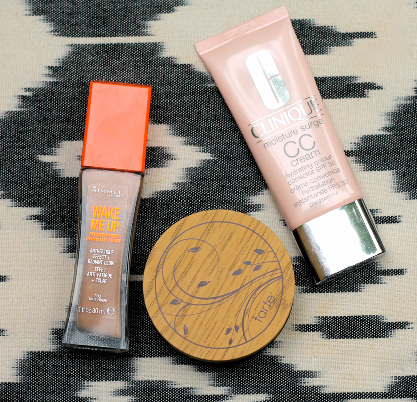

Top 3 fond de teint de l’été
 Saison de soleil, de chaleur et , n’ayons pas peur des mots, de sueur. Ce que je recherche d’un fond de teint pour cette période, c’est un produit qui donne au visage un aspect lumineux et non “j’ai-eu-un-peu-trop-chaud”. De plus, il faut qu’il ait une bonne tenue, pour traverser les journées les plus chaudes.
Tarte Amazonian Clay Full Coverage Airbrush Foundation. Ce fond de teint poudre s’applique comme un charme, sans aucune trace. La poudre se fond complètement dans la peau et donne presque un aspect “crémeux” au visage, ce qui m’a surpris pour un fond de teint poudre. Le fini donne au visage un aspect chatoyant car il y a des minuscules particules brillantes dans la poudre. Ne vous inquiétez pas, pas de gros brillant, juste un léger éclat.
Rimmel Wake Me Up Foundation. Pour un plus petit budget, ce fond de teint est la version liquide de celui en poudre de Tarte. Il a le même aspect éclatant. Il hydrate et laisse la peau lumineuse et réveillée. Le seul point négatif est que la variation de teinte est très limitée.
Clinique Moisture CC Cream. Pour une version avec un peu moins de couvrance, cette crème uniformise parfaitement le teint, tout en laissant un aspect naturel. En plus d’hydrater parfaitement la peau, elle donne aussi une protection solaire à large spectre, parfait pour les journées ensoleillées. J’aime bien appliquer cette crème avec les doigts, pour un fini encore plus naturel.
En bref, le jour je préfèrais utiliser la CC crème de Clinique pour la facilité de l’application ou alors le fond de teint poudre de Tarte pour un effet parfait, mais qui respire. Pour les chaudes soirées animées, Rimmel ne m’a pas déçu car j’avais un teint éclatant qui durait toute la soirée.
L’été n’est pas encore tout à fait terminé. Quel a été votre fond de teint préféré pendant la saison estivale?